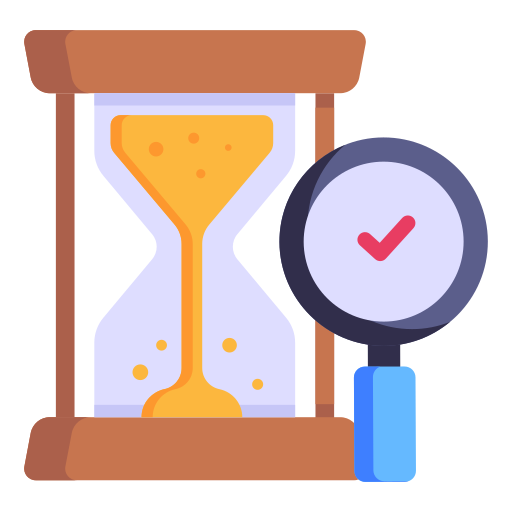

Why Choose Cryptora for Tokenomics Design
Optimized Economic Model
A well-designed tokenomics model ensures that your project's economic structure is optimized for sustainability, value creation, and growth.
Community Engagement
Tokenomics design plays a crucial role in fostering community engagement and participation. By offering incentives, governance mechanisms, and transparent distribution strategies, you can attract and retain a vibrant community of users and stakeholders.
Market Differentiation
A unique and compelling tokenomics model can set your project apart from competitors in the crowded cryptocurrency market.
Long-Term Viability
Sustainable tokenomics is essential for the long-term viability of your project. By balancing token supply, utility, governance, and incentives, you can create a robust economic foundation that withstands market volatility and regulatory challenges.Expert Guidance
Tokenomics design firms provide access to seasoned professionals with deep expertise in economics, finance, and blockchain technology.